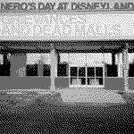
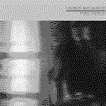

Who is Lauren Bousfield?
*** GENIUS BEHIND THE NOISE ***
Lauren Bousfield is a composer and electronic musician from California, based in Los Angeles. Her music tends to be chaotic and dense. She's most known for Nero's Day at Disneyland, a breakcore project with punk influence and a unique circus-like flair. She also played in punk groups such as Beautiful Mutants and Strip Mall Seizures.
Now she produces music under her own name as well as part of In-House Pharmacy, a duo made up of her and her wife, Naomi Mitchell. Her music is more pop oriented and has more vocals, but it feels like a developed version of what she made in Nero's.
Her website is here.
----------------------------
PAYMENT PROCESSED ............ DEBIT CARD
What her music means to me
*** SELF IN SOUND ***
Bousfield is probably my favorite musician of all time. Her music is a huge part of the "soundtrack" to my brain. I connect with so much of her music but especially what she made in Nero's. The way she orchestrates electronic sounds wire right into parts of my brain that I didn't know were there.
Sometimes I wish I got into her music earlier. I only discovered her a couple years ago when "Stretched Linen Over Contorted Bodies" appeared in my Discover Weekly. From the first listen, I was hooked. Something about that drowned out intro leading into this cacophony of electronic noise made me curious for more.
I've always been a fan of electronic music so this was bound to happen. I feel like where my music taste lies now is all thanks to her. It started with that weird dubstep I listened to as a kid and ended in my obsession with loud, glitchy, and strange electronic music.
----------------------------
BOUSFIELD'S DISCOGRAPHY
*** DATES IN ASCENDING ORDER ***
There are dozens of singles she released during the Nero's "era" on sites like MySpace, Most of these songs are collected into the fan-made album Heaven's Gate
She also composed the original soundtrack for the video game "Nazamu Running"
MY FAVORITES
*** ON REPEAT ***
**** My favorite single is bent chorals
 My favorite Nero's Day at Disneyland album is grievances and dead malls (2005)
My favorite Lauren Bousfield album is Fire Songs (2017) 
----------------------------
STARTED LISTENING #AUG 2022
first song #stretched lin***